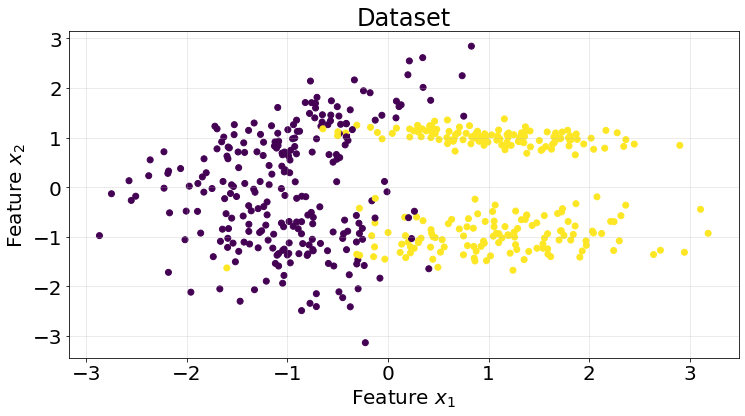

import numpy as np
import matplotlib.pyplot as plt
from sklearn.datasets import make_classification
from sklearn.base import ClassifierMixin
from sklearn.model_selection import KFold
from sklearn.metrics import roc_auc_score
from scipy.stats import normPersonal notes for myself about Naive Bayes Classifier and how to implement it from scratch
1. Introduction
Naive Bayes is a probabilistic model based on the Bayes’ Theorem. It can be used to perform classification tasks.
1.1. Bayes’ Theorem
The Bayes theorem is a way of linking the conditional probabilities of two events \(A\) and \(B\). The conditional probability of \(A\) given \(B\) is defined as
\[ P(A | B) = \dfrac{ P(A \cap B) }{ P(B) }. \]
Similarly, the conditional probability of \(B\) given \(A\) is defined as
\[ P(B | A) = \dfrac{ P(B \cap A) }{ P(A) } = \dfrac{ P(A \cap B) }{ P(A) } \]
We can solve in the second equation for \(P(A \cap B)\) and substitute in the first one to obtain the Bayes’ Theorem
\[ P(A | B) = \dfrac{ P(B | A) \cdot P(A) }{ P(B) } \]
1.2. Classification using Bayes’ Theorem
We want to use the Bayes’ Theorem to classify a class \(C\) given a vector of features \(X\), so we formulate the problem as
\[ P(C | X = (x_1, x_2, ..., x_n)) = \dfrac{ P(X = (x_1, x_2, ..., x_n) | C) \cdot P(C) }{ P(X) } \]
A vector of features \(X = (x_1, x_2, ..., x_n)\) whose class is unknown will be classified as the class that maximizes the probability \(P(C | X = (x_1, x_2, ..., x_n))\) such that
\[ C = \underset{C}{\operatorname{argmax}} \ P(C | X = (x_1, x_2, ..., x_n)) \]
1.3. Optimizing the computations of terms and naive assumption
Notice that the earlier expression is applied to each class, so we can avoid computing the marginal probability \(P(X)\)
\[ P(C | X = (x_1, x_2, ..., x_n)) \propto P(X = (x_1, x_2, ..., x_n) | C) \cdot P(C), \]
which means we need to compute \(P(C)\) and \(P(X = (x_1, x_2, ..., x_n))\).
To compute \(P(C)\) we can simply get the frequency of the class \(C\) in the data using the ratio of favorable outcomes of \(C\) divided by the total number of outcomes. To compute the \(P(C | X =(x_1, x_2, ..., x_n))\) we would need to estimate the joint distribution, which would mean computing \(2^n - 1\) (-1 to remove the empty possibility) probabilities for each possible combination of \(X=(x_1, x_2, ..., x_n)\). One approach to simplify this computation is to assume the features are conditionally independent so the complexity becomes linear
\[ P(X = (x_1, x_2, ..., x_n) | C) = P(x_1 | C) \cdot P(x_2 | C) \cdot ... \cdot P(x_n | C) = \prod_{i=1}^{n} P(x_i | C). \]
So far, we have obtained the following expression to compute the posterior probabilities
\[ P(C | X = (x_1, x_2, ..., x_n)) \propto P(x_1 | C) \cdot P(x_2 | C) \cdot ... \cdot P(x_n | C) \cdot P(C) = P(C) \cdot \prod_{i=1}^{n} P(x_i | C). \]
Since probabilities are real numbers between 0 and 1 the product of probabilities may yield zeroed values. We can solve this issue by taking the logarithm to obtain the log-probabilities
\[ \log(P(C | X = (x_1, x_2, ..., x_n))) \propto \log(P(x_1 | C) \cdot P(x_2 | C) \cdot ... \cdot P(x_n | C) \cdot P(C)). \]
One of the important properties of logarithms is \(\log(a \cdot b) = \log(a) + \log(b)\), so
\[ \log(P(C | X = (x_1, x_2, ..., x_n))) \propto \log(P(x_1 | C)) + \log(P(x_2 | C)) + ... + \log(P(x_n | C)) + \log(P(C)) = \log(P(C)) + \sum_{i=1}^{n} \log(P(x_i | C)). \]
A vector of features \(X\) will be assigned the class \(C\) that maximizes this log-prob:
\[ C = \underset{C}{\operatorname{argmax}} \ \log(P(C)) + \sum_{i=1}^{n} \log(P(x_i | C)). \]
The very last thing we need is defining \(P(x_i | C)\). Here, we can plug pretty much any probability distribution but for this example we are going to use the Gaussian distribution:
\[ P(x_i | C) = \dfrac{ 1 }{ \sqrt{2 \pi \sigma_{C}^2} } \cdot \exp^{ -\dfrac{ (x_{i} - \mu_{C}) }{ 2 \sigma_{C}^2 } } \]
2. Coding Naive Bayes from scratch
We first generate with the help of Scikit-Learn a synthetic dataset to perform the classification on.
np.random.seed(0)X, y = make_classification(n_samples=500, n_features=2, n_informative=2, n_redundant=0, n_classes=2, random_state=10)fig, ax = plt.subplots(1, 1, figsize=(12, 6))
ax.scatter(X[:, 0], X[:, 1], c=y)
ax.grid(True, alpha=.3)
ax.set_title("Dataset", fontsize=24)
ax.set_xlabel("Feature $x_{1}$", fontsize=20)
ax.set_ylabel("Feature $x_{2}$", fontsize=20)
ax.tick_params(labelsize=20)
We are going to code the classifier following the Scikit-Learn API for fit-predict
class GaussianNaiveBayes(ClassifierMixin):
def __init__(self):
self.gaussian_params = {}
self.class_probabilities = {}
def fit(self, X, y):
class_probabilities = {}
gaussian_params = {}
class_labels = np.unique(y)
for c_label in class_labels:
mask = y == c_label
features = X[mask]
# compute the probability of C
c_freq = mask.sum() / len(mask)
class_probabilities[c_label] = c_freq
# compute the parameters of the Gaussian distribution
mean = features.mean(axis=0)
std = features.std(axis=0)
gaussian_params[c_label] = {}
gaussian_params[c_label]["mean"] = mean
gaussian_params[c_label]["std"] = std
self.gaussian_params = gaussian_params
self.class_probabilities = class_probabilities
def predict(self, X):
gaussian_params = self.gaussian_params
class_probabilities = self.class_probabilities
class_labels = np.array(list(class_probabilities.keys()))
predictions = np.empty(shape=(X.shape[0], len(class_labels)))
for i, c_label in enumerate(class_labels):
mean = gaussian_params[c_label]["mean"]
std = gaussian_params[c_label]["std"]
p_xi_given_C = np.log(norm.pdf(X, loc=mean, scale=std)).sum(axis=1)
predictions[:, i] = p_xi_given_C + np.log(class_probabilities[c_label])
return np.argmax(predictions, axis=1)We test our model using a K-fold validation approach of 5 splits. We are going to compute the ROC AUC score to measure the classification goodness (we assume TPR and FPR are equally important and thus, this metric is appropriate).
kf = KFold(n_splits=5)roc_scores = []
for train_idx, test_idx in kf.split(X):
model = GaussianNaiveBayes()
X_train = X[train_idx]
y_train = y[train_idx]
X_test = X[test_idx]
y_test = y[test_idx]
model.fit(X_train, y_train)
y_pred = model.predict(X_test)
score = roc_auc_score(y_true=y_test, y_score=y_pred)
roc_scores.append(score)Our naive model performs really well for this dataset, with a mean of .92 area under the curve.
np.array(roc_scores).mean()0.9274911692023723. Strengths and Weaknesses
A summary of strenghts and weaknesses of this model.
Pros
- Very easy to implement and train.
- Computational complexity of \(O(n)\), with \(n\) being the number of samples.
- Good class estimator.
- Works well with small datasets.
- Seems to perform well on text classification.
Cons
- Assumes conditionally independent features, which may lead to poor performance in a dataset with correlated features.
- Not very good probability estimator.
- Limited at capturing complex relationships between the features.